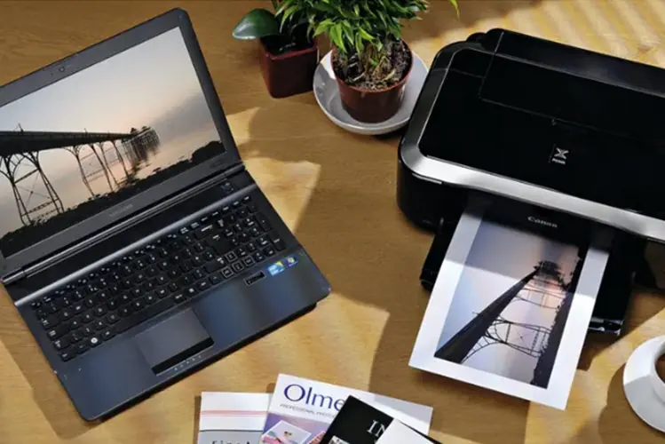

Printers
Printer Not Connecting to Wi-Fi? A Step-by-Step Troubleshooting Guide
Fix common wireless printer connection problems with practical checks for Wi-Fi, router settings, drivers, network bands and printer setup.
Introduction: Find Where the Connection Is Failing
A wireless printer not connecting can be a nuisance both in the office or at home. This can cause the printer to be offline, not appear in device list or not connect during initial setup. This can be due to network settings on the printer, the router, password changes, poor signal strength or the print queue on your computer.
To troubleshoot, start by confirming the printer is connected to the network, then confirm the computer/phone is connected to the same network. Finally confirm that the printer can be discovered. Try to avoid doing a factory reset unless you have noted any important network settings.

1. Confirm the printer supports your Wi-Fi network
Check the printer specifications to see what wireless standards and frequencies it supports. Some older printers only support 2.4GHz Wi-Fi. Newer routers may have both 2.4 and 5GHz networks but may combine them into one network name. Some set up processes will require either your phone or computer to be connected to a specific frequency.
If your printer doesn’t support the correct frequency or security settings on your network, it may not connect properly. Check the printer manual and router documentation.

2. Power cycle the printer and router
Sometimes a simple power cycle will fix any temporary networking issues. Turn the printer off using the power button. Wait a few seconds then turn it back on. Power cycle the router using the guidelines provided by your internet provider or router manufacturer. Once the network is up try reconnecting your printer.
Try to avoid constantly pulling devices from the network as they may be receiving firmware updates or maintenance. If you can’t connect to the internet on other devices, it could be a problem with the router or your internet.
3. Confirm the correct Wi-Fi name and password
If the password on your router has changed, your printer may still be trying to connect using the old password. Navigate to the wireless settings on your printer and select the correct network name. Enter the new password carefully. Passwords are case sensitive and can often be confusing if there are similar letters.
If your router uses separate network names for each frequency, choose one that your printer supports. Don’t use a guest network as this could mean your computer can’t find your printer.
4. Ensure the printer is close to the router
Poor signal strength can cause problems with the setup process, causing the printer to drop out occasionally. Place your printer close to the router. Avoid placing it in a sealed cabinet or behind thick walls. Large metal objects can cause issues with the wireless signal.
If your printer connects when close to the router, you may want to improve the position of your printer, or invest in a mesh Wi-Fi system. Some environments may benefit from a Wi-Fi extender. However, ensure it is set up correctly. Don’t place your printer somewhere that will block airflow or access to paper trays.
5. Ensure your computer is on the same network as your printer
Most local wireless printers will require your computer or phone to be able to communicate with the printer. Ensure your computer is not on a guest network, mobile hotspot or separate VLAN. In an office environment, networking policies may be in place to stop devices communicating.
If your printer has a network status page, print this out and check the status. Add your printer using the official app or OS settings. Don’t manually enter an IP address unless you have confirmed it is the correct IP for your printer and know if it will change.
6. Check for errors on your printer
Check your printer for errors such as ‘Failed to connect’, ‘Authentication Error’ or ‘Wireless Off’. Some printers will have a wireless set up wizard or network status report. Check the instructions for your exact model. Note down any error codes.
If your printer says it is connected but your computer shows it is offline, it could just be an issue with your printer settings. Check the print queue, driver and device.
7. Clear print queue and reboot
If your printer has a stuck print job it can appear to be unresponsive. Open the print queue on your computer and cancel any obvious stuck print jobs. Reboot your computer if needed. Print a small test page. Ensure you are printing to the correct printer.
If you can print using multiple devices but just not your computer, focus on your computer settings. If you can’t print from any devices, check your printer is connected to the network and sharing the network.
8. Update or reinstall official driver
If your driver is out of date or damaged, your computer may not be able to communicate with your printer properly. Go to the official support page for your printer manufacturer. Search for your exact model and download the driver for your operating system. Follow the instructions to install the driver. Remove any old duplicates.
Don’t use driver packages from unknown websites. If your printer is working on your mobile device but not your computer, reinstalling the official driver can be very helpful. Reboot your computer if prompted during the set up.
9. Check your router settings
Some routers have options such as client isolation, access control, MAC filtering or guest networks. These can stop your computer from communicating with your printer. In a managed office environment, your network may be segmented.
Don’t disable your security settings on your router or put your printer onto the public internet. If you are unsure what is stopping your printer from being found locally, contact your network administrator or internet provider. It is more important to keep your printer secure.
10. Reconnect using the wireless wizard
If none of the above have worked, reconnect your printer using the wireless wizard. Before doing a factory reset, note down any information you may need such as the network name, password and static settings. Follow the manufacturers instructions for reconnecting your printer. Don’t just do a general factory reset.
Once reconnected, check your printer has a network address. Print a test page. Add your printer to all required computers/mobile devices using the official set up.
When to contact technical support.
If your printer isn’t finding any compatible networks, keeps dropping out when close to the router, there is an error relating to the wireless hardware or isn’t connecting even after correct set up, contact your manufacturer, network admin or a qualified technician. Provide them with your printer model, router type, error message and what you have tried so far.
If other devices are having issues connecting to Wi-Fi, contact your internet provider or router support. If it is just your printer, it could be an issue with the wireless module, firmware or settings..
Need a hand with your printer or laptop?
Printerworld sells printers, laptops and genuine supplies, and repairs and services both. Bring in your model number and we will help you get it right.